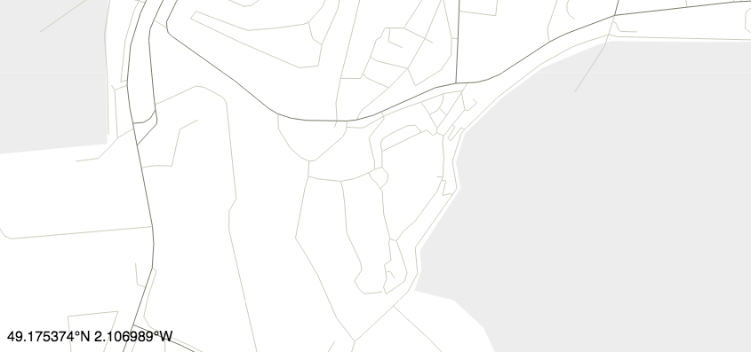

GeoTracking Interactive Dashboard
Saturday, January 1, 2008, 1-2pm

Transportation mode
50% (4 out of 8 users) have mode data
Aggregate info
| No. users | 8 | 2 avg | |
| No. paths | 11 | 3 avg | |
| Distance | 3km | 11km avg | |
| Duration (mins) | 1-3,102 | 4,27,34,52,54,59,61,68,78,82,85,87,91,93,100 | |
| Hour(H) | 1-2pm | 5,6,7,9,9,5,3,2,2,4,6,7,1,2,2,5,4,2,21,7,8 | Busier than usual |
| Completeness(H) | 23% | 5, 1, 22, 3, 20, 41, 12, 100, 100, 29, 39, 89, 48, 23, 23, 66, 45, 78 |
Active users
| 3km | 12min |
|

|
Usually walks at this hour | ||
| 11km | 23min |
|
|
First time taking taxi in 2 months | ||
| 0.3km | 5min |
|
|
|||
| 12km | 62min |
|
|
Walking longer than usual |